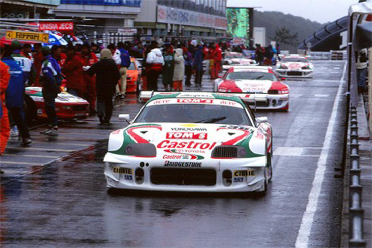

My favoutrite edition is Toyota Castrol TOM'S SUPRA (JGTC) '00.
It used JZA80(MKIV) for the base, Toyota turned it into a Race car.
They introduced a fresh air system used in their high tech rally cars in the World Rally Championship (WRC), and it also developed a cooling/water injection system to the 3S-G turbocharged inline-4, increasing both its power and fuel economy.

▲Toyota Castrol TOM'S SUPRA (JGTC) '00 in a Race.
The car appears as the #36 driven by Masanori Sekiya and Takeshi Tsuchiya, who achieved a 13th place overall in the 2000 JGTC season's GT500 class Driver's Championship. After this, It appears in all Gran Turismo games since Gran Turismo 3: A-Spec, with the exception of Gran Turismo Sport.